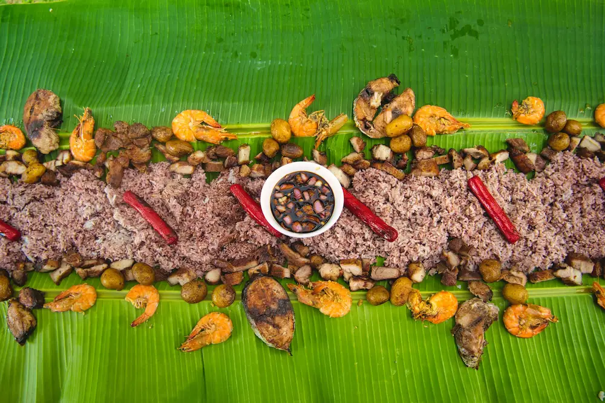

Luzon
Explore diverse cooking traditions, from vegetable-rich Ilocano dishes to the bold, spicy flavors of Bicol.
Explore Luzon
Our Story
Discover the flavors, traditions, and stories that make Filipino cuisine special.
Explore Our DishesIn Filipino culture, salo-salo refers to gathering together to share food and enjoy one another's company. It represents more than a meal—it celebrates family, friendship, hospitality, and connection.
Inspired by this tradition, Salo-Salo Filipino Food Guide was created to help people discover the dishes, ingredients, and cultural stories that make Filipino cuisine unique.
Our mission is to introduce people to the rich diversity of Filipino food by exploring its recipes, regional origins, and cultural influences. We want every visitor to discover something new and develop a deeper appreciation for the Philippines' culinary heritage.
Explore diverse cooking traditions, from vegetable-rich Ilocano dishes to the bold, spicy flavors of Bicol.
Explore Luzon
Discover island cooking, fresh seafood, grilled specialties, and beloved celebration dishes.
Explore Visayas
Learn about distinctive spice blends, Indigenous food traditions, and the diverse culinary heritage of its communities.
Explore MindanaoEvery Filipino dish carries memories, traditions, and the creativity of the people who prepare it. Through Salo-Salo, we hope to celebrate these stories and inspire more people to explore, appreciate, and share Filipino food.
Discover Filipino Cuisine